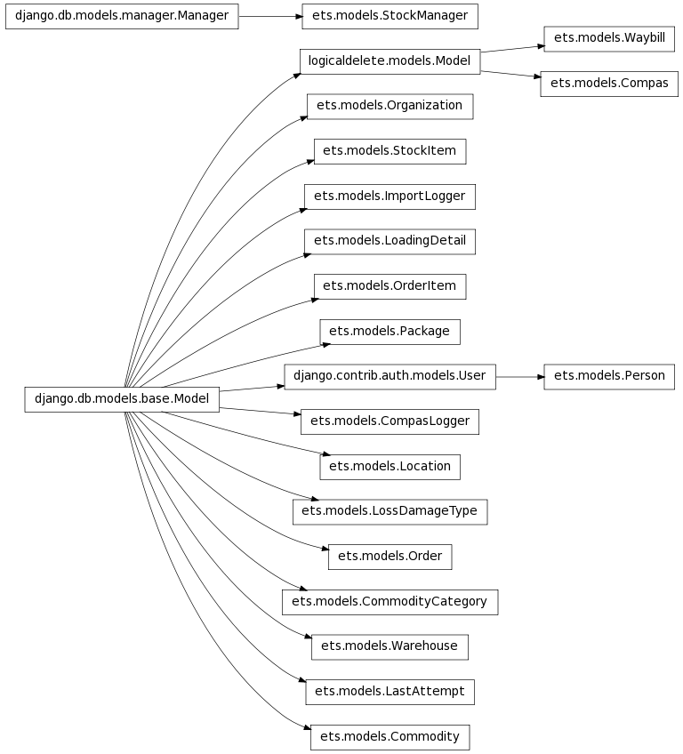

Central application in the system.
Commodity model
Commodity category
Compas station
CompasLogger(id, action, compas_id, waybill_id, when_attempted, status, message)
ImportLogger(id, compas_id, when_attempted, status, message)
LastAttempt(id, compas_id, attempt_date, status)
Loading details related to dispatch waybill
Retrieves stock items for current order item through warehouse
Location model. City or region
LossDamageType(slug, type, category_id, cause)
Delivery order
Retrieves stock items for current order through warehouse
Order item with commodity and counters
Calculates available stocks
Calculates available stocks
Calculates available stocks
Returns dispatches of current order
Calculates percent for executed
Returns all loading details with such item within any orders
Retrieves stock items for current order item through warehouse
Calculates number of such items supposed to be delivered in this order
Retrieves stock items for current order item through warehouse
Calculates number of such items supposed to be delivered in this order
Organization model
Packaging model
Person model
Accessible stocks
Retrieves stock items for current order item through warehouse
Retrieves stock items for current order item through warehouse
Warehouse. dispatch or recipient.
Base waybill abstract class
Bar code generator. This view uses ‘pyqrcode’ for back-end. It returns image file in response.
Validates Waybill instance. Checks different dates
This method compress the Waybill using zipBase64 algorithm.
@param self: the Waybill instance @return: a string containing the compressed representation of the Waybill with items
Signs the waybill as ready to be sent.
Returns all loaded but not signed waybills, and related to user
Signs the receipt waybill as ready to be sent.
Returns all waybills, that can be received, and related to user
This method serializes the Waybill with related LoadingDetails, LtiOriginals and EpicStocks.
@param self: the Waybill instance @return the serialized json data.

Imports file with compressed data, i.e. all datas from compas or eveb waybills
alias of ImportDataForm
Bar code generator. This view uses ‘pyqrcode’ for back-end. It returns image file in response.
View that accepts POST request with serialized and compress data. And, decompress it, finds a waybill and redirects to waybill details.
Listing of dispatch waybills. Firstly officer validates a waybill, then he can push it to COMPAS. Otherwise system does it every 2 minutes.
Returns a file with all COMPAS data in response
Utility ajax view that returns stock item information to fill dispatch form.
Executes COMPAS import for specific station.
Listing of receipt waybills. Firstly officer validates a waybill, then he can push it to COMPAS. Otherwise system does it every 2 minutes.
Submits dispatch waybills to COMPAS
Submits received waybills to COMPAS
Listing of stock items splitted by warehouses.
Landing page, that shows all COMPAS stations with possibility to import one-by-one.
Sets dispatch ‘validated’ flag. It allows system to submit this waybill to COMPAS.
Sets receipt ‘validated’ flag. It allows system to submit this waybill to COMPAS.
Creates a Waybill
Deletes specific waybill
utility that shows waybill’s details
Updates not signed dispatching waybill
called when user pushes Print Original on dispatch Redirects to order details
Signs reception
Shows waybill listing
Generates PDF version of waybill
Waybill reception view
Special view that accepts scanned data^ deserialized and redirect to waybill_receiption of that waybill
Waybill search view. Simply a wrapper on waybill_list
Waybill details view
FormSet base model. We use this formset in dispatch page.
Validates number of waybill items. System requires at least one line.
Dispatch waybill form.
Form that accepts file to import datas.
LoadingDetails model form to use in dispatch page.
Model form for loading details on receipt page.
Validates entered values, i.e. quantities
Person model form
Special form input to strip spaces.
Given a dictionary of data and this widget’s name, returns the value of this widget. Returns None if it’s not provided.
Waybill receipt form.
Waybill scan form with one input
Search form with only one field: query set
Overridden syncdb command
Special version of South’ syncdb command to make it work with our compas stations.
Middleware that forces every user to be authenticated. Otherwise returns login form.
Decorator to wrap method that imports data from COMPAS. In case of error Importlogger object is created.
Creates response with provided data and inserts Content-Disposition header with file name.
Callback to allow pisa/reportlab to retrieve Images,Stylesheets, etc. uri is the href attribute from the html link element. rel gives a relative path, but it’s not used here.
Fetches all COMPAS-imported data, serializes and compresses them
Utility to generate history of actions at some objects
Reads file, decompresses serialized data,deserializes it and saves objects
Imports all LTIs from COMPAS
Imports organizations from COMPAS
Imports persons from COMPAS
Imports warehouses with locations from COMPAS
Imports all possible loss/damage reasons
Imports stock items or updates quantity
Renders template with context to HTML, than to PDF
Submits dispatched and validated waybills to COMPAS
Submits received and validated waybills to COMPAS
Utility to run whole import process. If no fails Success ImportLogger is created.
Utility to run special import process. If no fails Success ImportLogger is created.
Piston is used for handling reports. We have a bunch of different handlers. And special emitter to create CSV.
Emitter that returns CSV file
Warehouse short information with code, name and location
alias of Warehouse
country, location. warehouse information
Waybill details with loading details flattened
alias of LoadingDetail
Return loading details for waybills in CSV
Order details with commodity items flattened
alias of OrderItem
Return order items in CSV
Order details without items
alias of Order
Return orders in CSV
Stock items
alias of StockItem
Finds all sent waybills to provided destination
Waybill details without loading details
alias of Waybill
Return waybills in CSV
Generator to convert intermodel relations waybill__order__pk to getitem waybill.order.pk
Extracts titles from model fields
Every handler has at least one mapping line in urls.py.